Visualizing the change in a numeric variable over some unit of time.
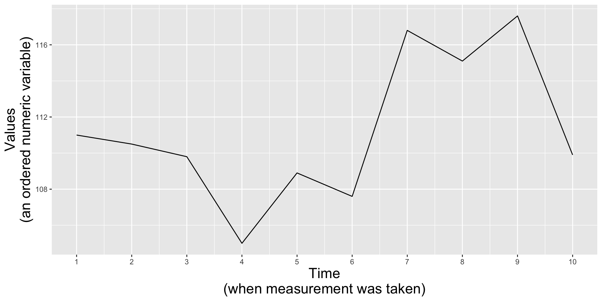
Roadmap
In this lesson, we’ll be exploring two primary chart types:
1. line graphs
2. area charts
Roadmap
In this lesson, we’ll be exploring two primary chart types:
1. line graphs
avoiding spaghetti plots
cutting the y-axis
aspect ratio
2. area charts
1 vs. multiple groups
how to interpret them
stacked vs. proportional stacked area chart
considerations
The data: Lyme disease
Lyme disease has been a nationally notifiable condition in the United States since 1991. Reports of Lyme disease are collected and verified by local and state health departments, anonymized by the National Notifiable Diseases Surveillance System (NNDSS), then shared with Centers for Disease Control and Prevention (CDC). The CDC has developed a public use data set for download to facilitate the public health and research community’s access to NNDSS data on Lyme disease.
Using the publicly-available CDC data on Lyme disease and population estimates from the US Census Bureau (via the {tidycensus} package), we’ll explore changes in Lyme disease cases over time, by state.
{tidycensus} for accessing US population data
The {tidycensus} package allows users to interface with a select number of the US Census Bureau’s data APIs and return tidyverse-ready data frames.
See the online documentation for more information on downloading and parsing population data using the {tidycensus} package.
##~~~~~~~~~~~~~~~~~~~~~~~~~~~~~~~~~~~~~~~~~~~~~~~~~~~~~~~~~~~~~~~~~~~~~~~~~~~~~~## setup ----##~~~~~~~~~~~~~~~~~~~~~~~~~~~~~~~~~~~~~~~~~~~~~~~~~~~~~~~~~~~~~~~~~~~~~~~~~~~~~~#.........................load libraries.........................library(tidycensus)library(tidyverse)library(janitor)library(gghighlight)#.........................source API key.........................source(here::here("KEYS.R"))census_api_key(censusKEY)#..........................import data...........................lyme <-read_csv(here::here("week3", "data", "LD-Case-Counts-by-County-01-20.csv"))##~~~~~~~~~~~~~~~~~~~~~~~~~~~~~~~~~~~~~~~~~~~~~~~~~~~~~~~~~~~~~~~~~~~~~~~~~~~~~~## wrangle lyme disease data ----##~~~~~~~~~~~~~~~~~~~~~~~~~~~~~~~~~~~~~~~~~~~~~~~~~~~~~~~~~~~~~~~~~~~~~~~~~~~~~~#............wide to long (plus some other wrangling)............lyme_clean <- lyme |># make col names snake_case ---- janitor::clean_names() |># rename columns ----rename(city = ctyname, state = stname, status = ststatus) |># wide to long (tidy) yearspivot_longer(cols =6:25, names_to ="city_year", values_to ="reported_cases") |># remove "cases" from the year & coerce year from chr to factor ----mutate(year =str_remove(city_year, pattern ="cases"),year =as.factor(year)) |># select necessary cols ----select(year, city, state, status, reported_cases)#................calculate total cases per state.................lyme_states <- lyme_clean |>group_by(year, state) |>summarize(total_cases =sum(reported_cases)) ##~~~~~~~~~~~~~~~~~~~~~~~~~~~~~~~~~~~~~~~~~~~~~~~~~~~~~~~~~~~~~~~~~~~~~~~~~~~~~~## request / wrangle population data ----##~~~~~~~~~~~~~~~~~~~~~~~~~~~~~~~~~~~~~~~~~~~~~~~~~~~~~~~~~~~~~~~~~~~~~~~~~~~~~~#...................get pop estimates by state...................us_state_pop <-get_estimates(geography ="state", product ="population",state =NULL, year =2019) |>filter(variable =="POP") |>select(state = NAME, population = value) #........................write data to csv.......................# optional, but recommended in case you want to work offline, the API is down, etc. (you can then read in your saved data file rather than run the above code)# write_csv(us_state_pop, file = here::here("week3", "data", "us_state_pop.csv"))##~~~~~~~~~~~~~~~~~~~~~~~~~~~~~~~~~~~~~~~~~~~~~~~~~~~~~~~~~~~~~~~~~~~~~~~~~~~~~~## join lyme & pop dfs ----##~~~~~~~~~~~~~~~~~~~~~~~~~~~~~~~~~~~~~~~~~~~~~~~~~~~~~~~~~~~~~~~~~~~~~~~~~~~~~~lyme_pop <-left_join(lyme_states, us_state_pop) |># add col with num of 100k people per state ----mutate(pop100k = population/100000) |># calculate num cases per 100k people (common way of reporting disease incidence) ----mutate(cases_per100k = total_cases/pop100k)
Line plots show the evolution of 1+ numeric variables
Line graphs display the evolution of one or several numeric variables. They are similar to scatter plots, but the measurement points are ordered (typically by their x-axis value) and joined with straight line segments. They are often used to visualize a trend in data over intervals of time. For example, changes in Lyme disease incidence (# cases / 100k people) from 2010 - 2020, by state:
A basic line graph using geom_line()
lyme_pop |>filter(year %in%c(2010:2020)) |>ggplot(aes(x = year, y = cases_per100k, group = state)) +geom_line()
Line plots show the evolution of 1+ numeric variables
Line graphs display the evolution of one or several numeric variables. They are similar to scatter plots, but the measurement points are ordered (typically by their x-axis value) and joined with straight line segments. They are often used to visualize a trend in data over intervals of time. For example, changes in Lyme disease incidence (# cases / 100k people) from 2010 - 2020, by state:
A basic line graph using geom_line()
lyme_pop |>filter(year %in%c(2010:2020)) |>ggplot(aes(x = year, y = cases_per100k, group = state)) +geom_line()
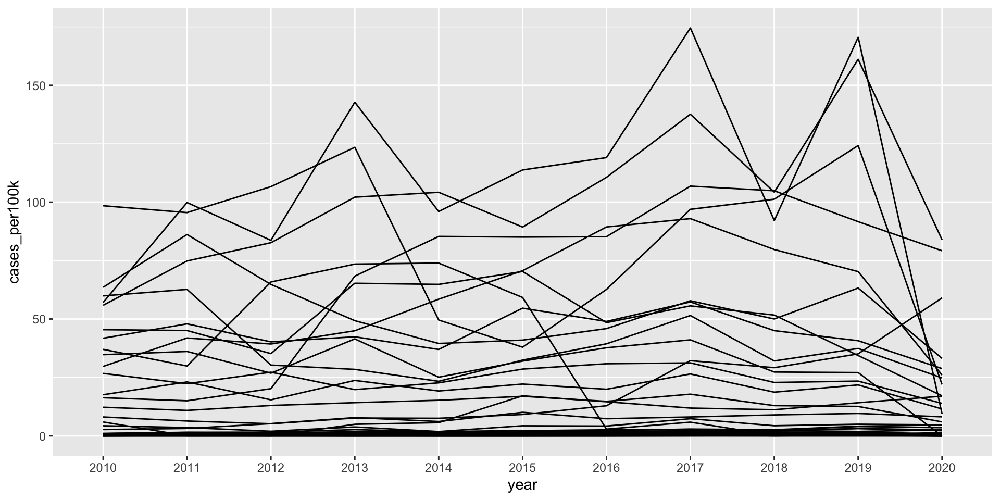
A connected scatter plot by layering on geom_point()
lyme_pop |>filter(year %in%c(2010:2020)) |>ggplot(aes(x = year, y = cases_per100k, group = state)) +geom_line() +geom_point()
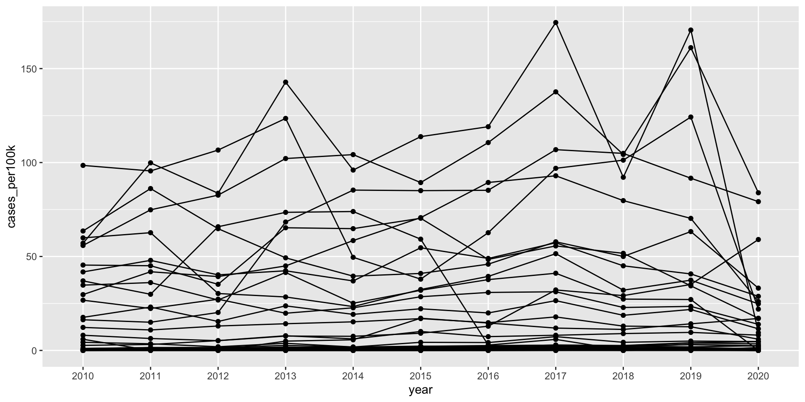
“Spaghetti plots” are hard to read
A line plot with many lines displayed together can be hard to read / overwhelming to interpret. Consider highlighting a group(s) of interest (the {gghighlight} package comes in handy):
E.g. I’m interested in how Lyme disease in New Jersey compares to other states.
lyme_pop |>filter(year %in%c(2010:2020)) |>ggplot(aes(x = year, y = cases_per100k, group = state)) +geom_line() + gghighlight::gghighlight(state =="New Jersey")
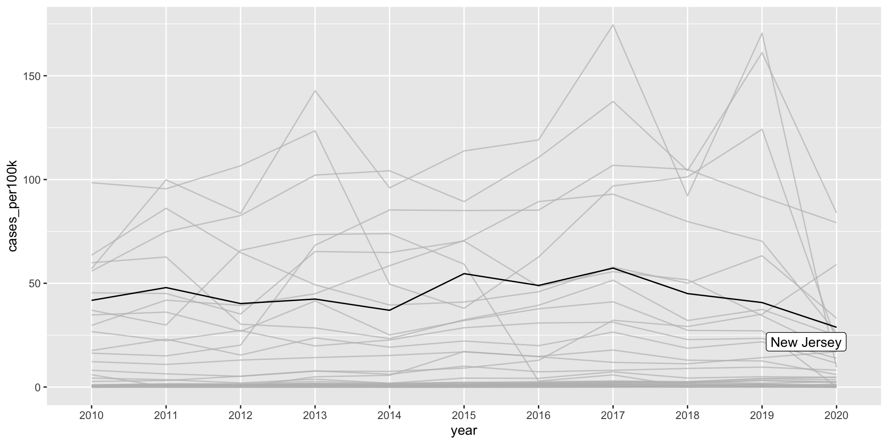
E.g. I’m interested in states where Lyme disease incidence is (or at one point was) > 100 cases / 100k people.
lyme_pop |>filter(year %in%c(2010:2020)) |>ggplot(aes(x = year, y = cases_per100k, group = state, color = state)) +geom_line() + gghighlight::gghighlight(max(cases_per100k) >100)
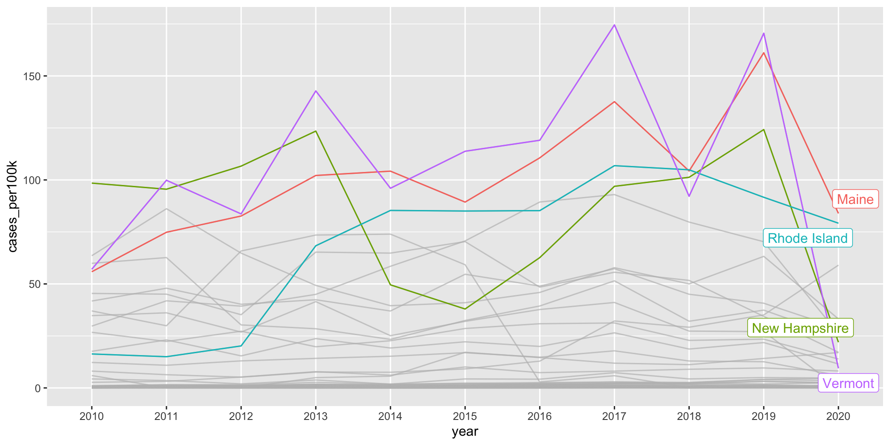
It’s okay to cut the y-axis of line graphs
Line graphs encode data by position and not length (e.g. as in the height of a bar graph), therefore, you can choose to include the 0 origin only if it makes sense.
Do not start the y-axis at 0 if the range of data is small but the distance from the bottom of the range to zero is large. For example:
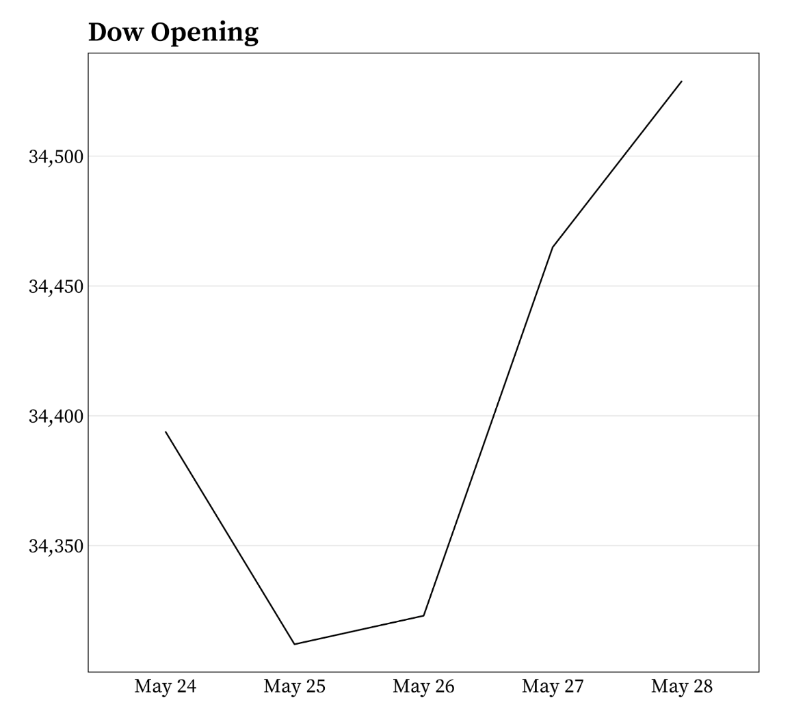
It’s okay to cut the y-axis of line graphs
Do not start the y-axis at 0 if the relationship to zero is insignificant. For example:
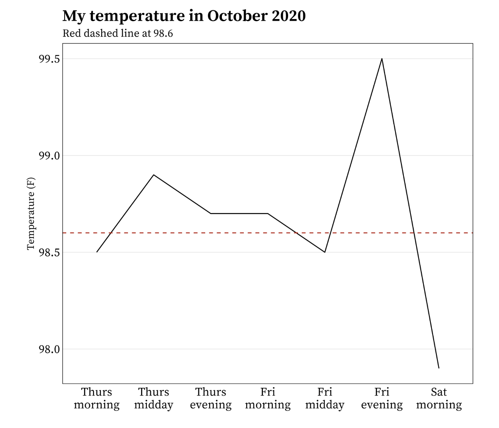
Aspect ratio affects perception of slope
The aspect ratio is the height:width ratio of a graph. The larger the aspect ratio, the steeper changes appear, which may cause readers to interpret changes as more important. The smaller the aspect ratio, the flatter the line which may cause readers to interpret changes as small / insignificant.
There’s no exact rule for what aspect ratio to use for a given graphic (but see Cleveland et al. 1988 to read about the “banking to 45 degrees” rule) – it depends on the nature of the variable and your goal with the visualization. However it’s important to keep mind that manipulating the aspect ratio can mislead readers, and so you should do so carefully.
Aspect ratio affects perception of slope
Consider this line graph of sunspot activity from 1700 - 2015, with a default aspect ratio (1:1). Can you easily identify where in time sunspot activity rises more quickly / sharply than others?
Let’s first look at Lyme disease incidence for Vermont from 2010 - 2020 without adjusting the aspect ratio:
lyme_pop |>filter(year %in%c(2010:2020)) |>filter(state =="Vermont") |>ggplot(aes(x = year, y = cases_per100k, group = state)) +geom_line()
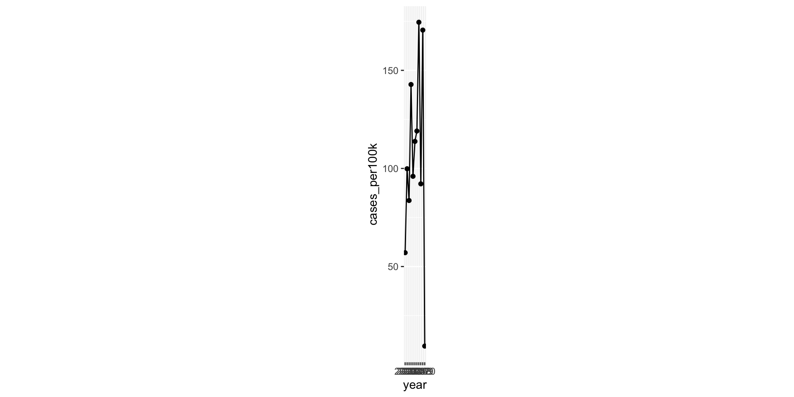
ggplot with a default aspect ratio
We have 10 units on our x-axis (year ranges from 2010 - 2020), and ~175 units (case_per100k ranges from 0 to ~175) on our y-axis. By default, ggplot adjusts the space between each x-axis unit so that they are wider apart than each y-axis unit, making the plot easier to read. Below, we’ve added in tick marks for each y-axis unit to better highlight this (a single tick already existed for each of our 10 x-axis units).
Note: This plot doesn’t render well in thse slides or in the RStudio plot pane. I recommend running the code in RStudio, then clicking the Zoom button in the Plot pane for best viewing.
lyme_pop |>filter(year %in%c(2010:2020)) |>filter(state =="Vermont") |>ggplot(aes(x = year, y = cases_per100k, group = state)) +geom_line() +scale_y_continuous(breaks =seq(0, 190, by =1))
Adjust the aspect ratio using coord_fixed()
We can use coord_fixed() to fix the aspect ratio of our plot. The ratio argument controls the aspect ratio, which is expressed as y / x and by default is set to 1. This means that the height of one y-unit is equal to the width of one x-unit (paying attention to the grid lines and tick marks here can be helpful). Because we have 175 y-axis units and only 10 x-axis units, fixing our aspect ratio at 1:1 means our plot gets taller and squished.
Note: This plot doesn’t render well in thse slides or in the RStudio plot pane. I recommend running the code in RStudio, then clicking the Zoom button in the Plot pane for best viewing.
lyme_pop |>filter(state =="Vermont") |>filter(year %in%c(2010:2020)) |>ggplot(aes(x = year, y = cases_per100k, group = state)) +geom_line() +scale_y_continuous(breaks =seq(0, 190, by =1)) +coord_fixed(ratio =1)
Adjust the aspect ratio using coord_fixed()
Ratios > 1 will make units on the y-axis longer than units on the x-axis (resulting in steeper slopes). Ratios < 1 will make units on the x-axis longer than units on the y-axis (resulting in shallower slopes). If we want to make our graph wider, we’ll need to update ratio so that it’s < 1. For example:
Note: This plot doesn’t render well in thse slides or in the RStudio plot pane. I recommend running the code in RStudio, then clicking the Zoom button in the Plot pane for best viewing.
lyme_pop |>filter(state =="Vermont") |>filter(year %in%c(2010:2020)) |>ggplot(aes(x = year, y = cases_per100k, group = state)) +geom_line() +coord_fixed(ratio =1/50)
Playing around with the ratio value yourself is the best way to get a sense for how the aspect ratio of a given ggplot will change.
Area chart is similar to a line graph, just filled in
Instead of just a line or connected scatter plot to indicate the change in a numeric variable through time, the space between the line and the x-axis is colored or shaded in. Area plots are sometimes criticized for violating the data-ink ratio rule, which argues that any non-data-ink should be omitted wherever possible. If the number of observations is low (as in this example) a connected scatter plot may more clearly show when each observation was made.
A basic area plot (New Jersey)
lyme_pop |>filter(year %in%c(2010:2020)) |>filter(state =="New Jersey") |>ggplot(aes(x = year, y = cases_per100k, group = state)) +geom_area()
Update the fill color
lyme_pop |>filter(year %in%c(2010:2020)) |>filter(state =="New Jersey") |>ggplot(aes(x = year, y = cases_per100k, group = state, fill = state)) +geom_area() +scale_fill_manual(values =c("#047C90")) +theme(legend.position ="none")
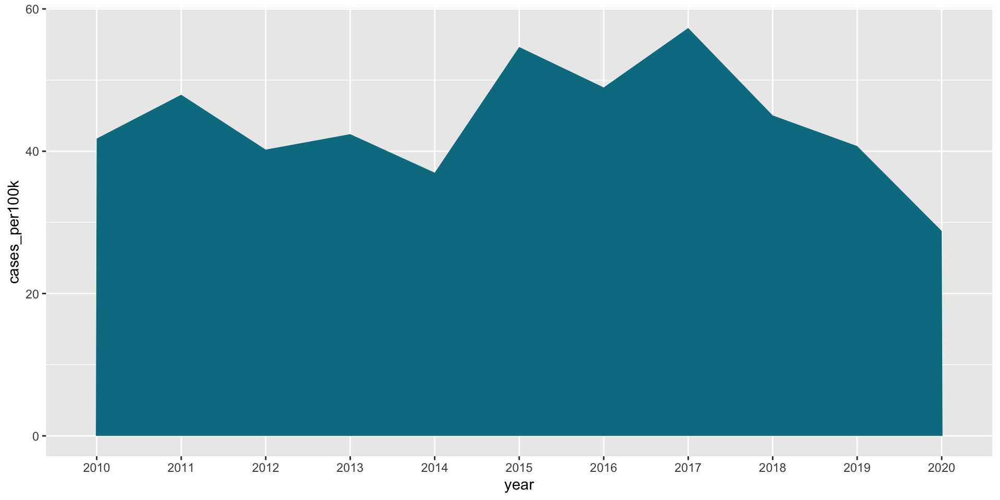
Stacked area charts show the evolution of a whole + the relative contribution of each group
Stacked area charts are useful for showing the evolution of a whole and the relative proportions of each group that make up the whole. For example, the top of the colored area shows the total Lyme disease incidence (# cases / 100k people) across all groups (notice the difference in y-axis values), while the individual colors are the relative contributions of the top 4 states with the highest lyme disease incidence:
lyme_pop |>filter(year %in%c(2010:2020)) |>filter(state %in%c("Maine", "Rhode Island", "New Hampshire", "Vermont")) |>ggplot(aes(x = year, y = cases_per100k, group = state, fill = state)) +geom_area()
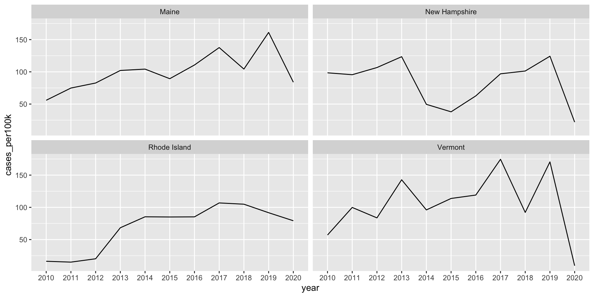
A variant: proportional stacked area charts
Proportional stacked area charts plot percentage contribution instead of absolute numbers on the y-axis. The focus of this version is the proportion of contribution made by each category rather than absolute numbers.
lyme_pop |>filter(year %in%c(2010:2020)) |>filter(state %in%c("Maine", "Rhode Island", "New Hampshire", "Vermont")) |>ggplot(aes(x = year, y = cases_per100k, group = state, fill = state)) +geom_area(position ="fill") +scale_y_continuous(labels = scales::percent_format(scale =100))
Group order matters!
Group order (from bottom to top) can have an influence – oftentimes, you’ll want to put the most important group on the bottom (closest to the x-axis), since your audience will have an easier time reading values for that group. For example, US Drought Monitor likely wanted to draw attention to what percentage of land area in CA experienced the highest-severity drought level (D4, Exceptional). By plotting that group on the bottom of the graph below, we can more easily identify that ~60% of CA experienced the worst level of drought in 2014-2015.
You’ll be recreating this graph (original source US Drought Monitor, via Wikipedia) in discussion section this week!
This article by Info River nicely outlines situations where using a stacked area chart is great, when not to use them, and important considerations.
Stacked area charts are not good for studying the evolution of individual groups
It is super challenging to subtract the height of groups from one another at any / each given point in time. For example, both of the charts below show the same data (Lyme disease incidence (# cases / 100k people) for Maine, New Hampshire, Rhode Island, and Vermont):
lyme_pop |>filter(year %in%c(2010:2020)) |>filter(state %in%c("Maine", "Rhode Island", "New Hampshire", "Vermont")) |>ggplot(aes(x = year, y = cases_per100k, group = state, fill = state)) +geom_area()
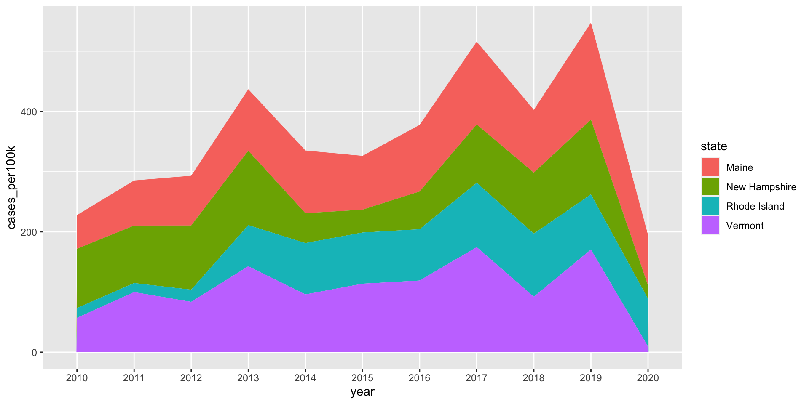
lyme_pop |>filter(year %in%c(2010:2020)) |>filter(state %in%c("Maine", "Rhode Island", "New Hampshire", "Vermont")) |>ggplot(aes(x = year, y = cases_per100k, group = state, color = state)) +geom_line() +facet_wrap(~state)
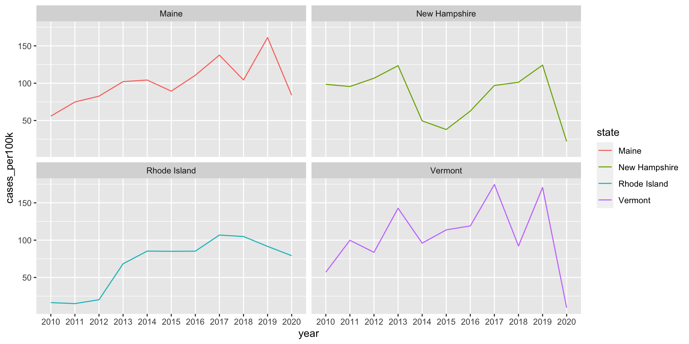
See you next week!
~ This is the end of Lesson 3 (of 3) ~
Assignments
End-of-class Survey week 3 (EOC #2) – Due Mon 01/22 at 11:55pm